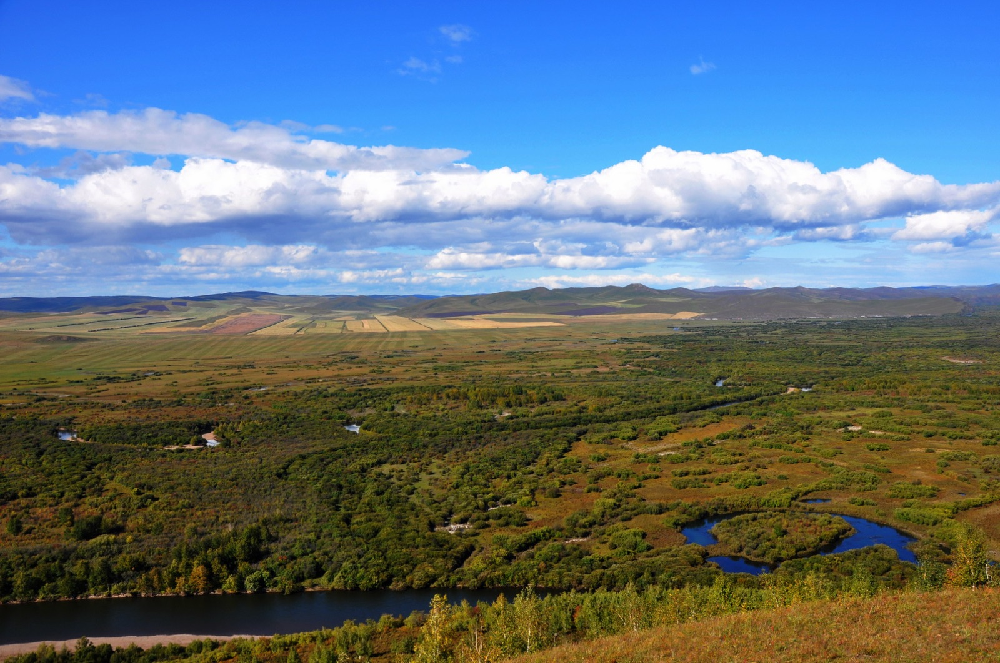
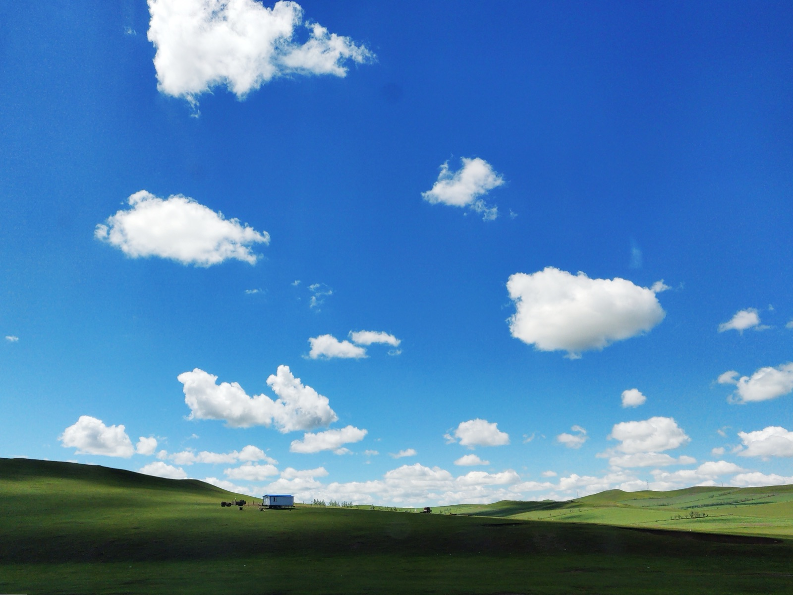

DISCOVER INNER MONGOLIA
辽阔，不止于所见。
山、水、林、田、湖、草、沙。
每一种自然禀赋，都有自己的空间坐标。
在一张图上，看见联系，发现价值。

PUBLIC SERVICES
找到要办的事。
统一展示服务入口，关联已有业务系统。
本页为交互原型。正式办事地址与生产系统接口尚未接入。
INFORMATION & GUIDES

DISCOVER INNER MONGOLIA
山、水、林、田、湖、草、沙。
每一种自然禀赋，都有自己的空间坐标。
在一张图上，看见联系，发现价值。

PUBLIC SERVICES
统一展示服务入口，关联已有业务系统。
本页为交互原型。正式办事地址与生产系统接口尚未接入。
INFORMATION & GUIDES